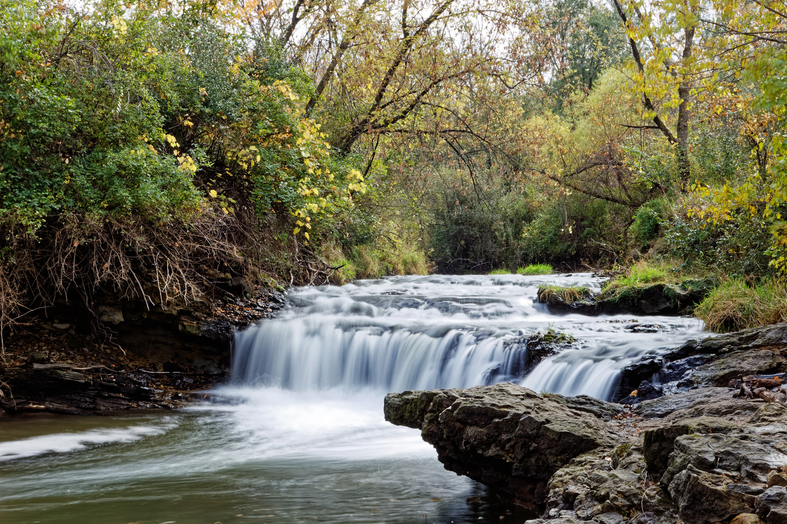

The Hawkeye State
Iowa is lovingly nicknamed the hawkeye state. The nickname was first recorded in 1895. It is not quite clear as to how the nickname came to be. Some state that the name came from a character in James Fenimore's "Last of the Mohicans". Others state that it was a nod to Chief Black Hawk. Either way Iowans have embrased the nickname for over a hundred years now with University of Iowa adopting it to their athletics department and creating the mascot "Herky the Hawk".